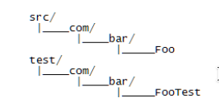

1. Tipos de test de software
El siguiente contenido es un estracto del libro "Diseño Ágil con TDD" de Carlos Blé Jurado y colaboradores.
Existen diferentes test según el modo de clasificarlos.
Según el propietario
- Test propiedad del cliente (Product Owner)
- Test de aceptación: son escritos con ayuda de un analista durante la fase de planificación.
- Test funcional: son escritos una vez que el producto ya es usable.
- Test propiedad de los programadores
- Test unitario.
- Test de integración.
- Test de sistema.
Test de aceptación
Es un test que permite comprobar que el software cumple con un requisito de negocio. ¿Los tests de aceptación no usan la interfaz de usuario del programa? Podría ser que sí, pero en la mayoría de los casos la respuesta debe ser no. Los tests de carga y de rendimiento son de aceptación cuando el cliente los considera requisitos de negocio. Si el cliente no los requiere, serán tests de desarrollo.
Test funcionales
Todos los tests son en realidad funcionales, puesto que todos ejecutan alguna función del SUT (Subject Under Test, o código que se está probando), aunque en el nivel más elemental sea un método de una clase. No obstante, cuando se habla del aspecto funcional, se distingue entre test funcional y test no funcional. Un test funcional es un subconjunto de los tests de aceptación. Es decir, comprueban alguna funcionalidad con valor de negocio. Los tests de aceptación tienen un ámbito mayor porque hay requerimientos de negocio que hablan de tiempos de respuesta, capacidad de carga de la aplicación, etc; cuestiones que van más allá de la funcionalidad. Un test funcional es un test de aceptación pero, uno de aceptación, no tiene por qué ser funcional.
Test de sistema
Es el mayor de los tests de integración, ya que integra varias partes del sistema. Se trata de un test que puede ir, incluso, de extremo a extremo de la aplicación o del sistema. Se habla de sistema en referencia a la integración de todos los elementos que componen la aplicación. Así pues, un test del sistema se ejecuta tal cual lo haría el usuario humano, usando los mismos puntos de entrada (aquí sí es la interfaz gráfica) y llegando a modificar la base de datos o lo que haya en el otro extremo.
Los tests de sistema son muy frágiles en el sentido de que cualquier cambio en cualquiera de las partes que componen el sistema, puede romperlos. No es recomendable escribir un gran número de ellos por su fragilidad. Si la cobertura de otros tipos de tests de granularidad más fina, como por ejemplo los unitarios, es amplia, la probabilidad de que los errores sólo se detecten con tests de sistema es muy baja. O sea, que si hemos ido haciendo TDD, no es productivo escribir tests de sistema para todas las posibles formas de uso del sistema, ya que esta redundancia se traduce en un aumento del costo de mantenimiento de los tests.
La diferencia entre los tests de sistema y los funcionales
Los tests de sistema son diferentes de los tests funcionales y de aceptación. Sin embargo, a veces se pueden confundir. Un test funcional trata de probar que se cumple un cierto requisito de negocio que el cliente considera de valor. Por ejemplo, si estuviésemos creando un cliente para un servicio de correo electrónico, un requisito de negocio podría ser:
En el caso de intentar iniciar sesión con una cuenta de correo errónea, la aplicación devuelve un mensaje de respuesta.
El requisito de negocio no habla de la GUI en ningún momento. Por tanto, el test funcional no entraría a ejecutar el sistema desde el extremo de entrada que usa el usuario (la GUI). Su objetivo es únicamente comprobar que el requisito se cumple.
Si la mayoría de los criterios de aceptación se validan mediante tests funcionales, tan sólo nos harán falta unos pocos tests de sistema para comprobar que la GUI está bien conectada a la lógica de negocio. Esto hará que nuestros tests sean menos frágiles y estaremos alcanzando el mismo nivel de cobertura de posibles errores.
En la documentación de algunos frameworks, llaman test unitarios a tests que en verdad son de integración y, llaman tests funcionales, a tests que son de sistema. Llamar test funcional a un test de sistema no es un problema siempre que adoptemos esa convención en todo el equipo y todo el mundo sepa para qué es cada test.
En casos puntuales, un requisito de negocio podría involucrar la GUI, simpre que lo el requisito lo indique específicamente.
Test unitario
Son los tests más importantes para el practicante TDD. Cada test unitario o test unidad (unit test en inglés) es un paso que andamos en el camino de la implementación del software. Todo test unitario debe ser:
- Atómico: el test prueba la mínima cantidad de funcionalidad posible. Esto es, probará un solo comportamiento de un método de una clase. El mismo método puede presentar distintas respuestas ante distintas entradas o distinto contexto. El test unitario se ocupará exclusivamente de uno de esos comportamientos, es decir, de un único camino de ejecución. A veces, la llamada al método provoca que internamente se invoque a otros métodos; cuando esto ocurre, decimos que el test tiene menor granularidad, o que es menos fino. Lo ideal es que los tests unitarios ataquen a métodos lo más planos posibles, es decir, que prueben lo que es indivisible. La razón es que un test atómico nos evita tener que usar el depurador para encontrar un defecto en el SUT, puesto que su causa será muy evidente.
- Independiente: significa que un test no puede depender de otros para producir un resultado satisfactorio. No puede ser parte de una secuencia de tests que se deba ejecutar en un determinado orden. Debe funcionar siempre igual independientemente de que se ejecuten otros tests o no.
- Inocuo: no altera el estado del sistema. Al ejecutarlo una vez, produce exactamente el mismo resultado que al ejecutarlo veinte veces. No altera la base de datos, ni envía emails ni crea ficheros, ni los borra. Es como si no se hubiera ejecutado.
- Rápido: un test unitario debe ejecutarse en una fracción de segundo, porque grandes pilas de tests se ejecutarán varias veces al día, conforme vayamos haciendo cambios (y refactorizando) nuestro código.
Las características de un test unitario también quedan descritas por el acrónimo F.I.R.S.T (Fast, Independent, Repeatable, Small y Transparent).
Test de integración
Por último, los tests de integración son la pieza del puzzle que nos faltaba para cubrir el hueco entre los tests unitarios y los de sistema. Los tests de integración se pueden ver como tests de sistema pequeños. Tienen un aspecto parecido a los tests unitarios, sólo que estos pueden romper las reglas. Como su nombre indica, integración significa que ayuda a unir distintas partes del sistema. Un test de integración puede escribir y leer de base de datos para comprobar que, efectivamente, la lógica de negocio entiende datos reales. Es el complemento a los tests unitarios, donde habíamos "falseado" el acceso a datos para limitarnos a trabajar con la lógica de manera aislada. Un test de integración podría ser aquel que ejecuta la capa de negocio y después consulta la base de datos para afirmar que todo el proceso, desde negocio hacia abajo, fue bien. Son, por tanto, de granularidad más gruesa y más frágiles que los tests unitarios, con lo que el número de tests de integración tiende a ser menor que el número de tests unitarios. Una vez que se ha probado que dos módulos, objetos o capas se integran bien, no es necesario repetir el test para otra variante de la lógica de negocio; para eso habrán varios tests unitarios. Aunque los tests de integración pueden saltarse las reglas, por motivos de productividad es conveniente que traten de ser inocuos y rápidos. Si tiene que acceder a base de datos, es conveniente que luego la deje como estaba.
Los tests unitarios deben pertenecer a suites de tests diferentes para poder ejecutarlos por separado.
2. JUnit
JUnit es el framework de prueba más usado en Java. No viene por defecto con las librerías de Java, por lo que hay que añadir la dependencia. La manera más sencilla es utilizando Maven, aunque también se puede añadir la librería como dependencia manualmente.
La versión que vamos a utilizar JUnit 4, aunque la versión 5 está disponible desde hace tiempo. La razón es que hay bastante más documentación disponibles sobre Junit 4, y además, es más sencilla de utilizar.
Cómo organizar el código con pruebas
Para cada clase que queramos probar, tendremos una clase donde se realizan las pruebas. La cuestión es, ¿Dónde se deben colocar las clases con las pruebas. Existen dos opciones.Aparentemente, la mejor estructura para organizar el código es la siguiente.
De esta manera mantenemos una separación entre el código y las pruebas.
Existe otra alternativa, que tiene como ventaja la visibilidad de paquete. Aunque el número de archivos de un paquete se duplica, y esto provoca que examinar el contenido del paquete sea más confuso.
Por defecto, IntelliJ organiza los tests tal y como se muestra en la primera imagen.
La primera prueba
Para escribir una primera prueba es necesario contar un proyecto que cuente con JUnit como dependencia. Para empezar, podemos escribir un test para una clase que sencillamente devuelve un número.
El primer test, lo podemos obtener haciedo clic derecho sobre el nombre de la clase, y eligiendo la opción generate -> test. En el diálogo que se abre a continuación, elegimos las opciones que se muestran en la imagen.
El resultado será una clase llamada com.politecnicomalaga.SumaTest en la carpeta test con el código siguiente:
Sólamente nos queda escribir una prueba. El código podría ser como el siguiente:
Para ejecutar el test, basta con colocarse sobre la carpeta src/test/java, hacer clic con el botón derecho y elegir la opción run all tests.

Un test fallido
Vamos a añadir un test dentro del caso de prueba SumaTest que de fallo. El código podría ser el siguiente:
Actividad 1. Crea de nuevo el proyecto de conversión de medidas. El proyecto debe contar con una clase llamada ConversionMedidas que contenga los siguientes métodos:
double inchACm(double inches): toma un valor en pulgadas y devuelve la medida en centímetros equivalente.double cmAInch(double cm): toma un valor en centímetros y devuelve la medida en pulgadas equivalente.
Ten en cuenta que las pruebas de aceptación son las siguientes:
- 1 inch = 2,54 cm
- 12 inch = 30,48 cm
- 12 cm = 4,72441 inc
- 0 cm = 0 inch
- 0,5 cm = 0,1968 inch
3. Tests bien estructurados
Antes de empezar vamos a definir dos conceptos: caso de prueba y test (o prueba)
Caso de prueba: llamamos caso de prueba al conjunto de tests que se deben realizar para comprobar que un requisito funcional se cumple. En nuestro caso, un caso de prueba viene dado por una clase donde se incluyen un conjunto de tests que verifican una cierta funcionalidad.
Test: llamamos test (o prueba) a un a prueba individual con una o más comprobaciones, como parte de un caso de prueba. En nuestro caso, llamaremos test a un método en un caso de prueba precedido por la anotación @Test
Hay aspectos que hacen que un caso de prueba y un test estén bien estructurados. Los epígramos presentados a continuación, tratan sobre eso.
Inicialización y cierre
Un test bien estructurado incluye una parte de inicialización, llamada fixture. Esta inicialización suele coincidir en todos los tests, y consiste en crear el objeto de interés, asignar ciertos valores, conectar a una base de datos, etc.
Esta inicialización se puede llevar a cabo manualmente, incluyendo un método que realice las tareas de inicialización específicas de un test. Vamos a ver un ejemplo
En el ejemplo anterior, el método de inicialización se llamada inicalizarLista. En dicho método se realizan las tareas de inicialización de de una lista llamada lista. Una inicialización manual como esta, afecta únicamente al test que ejecute el método inicializarLista.
Una segunda manera de inicializar un test, es mediante un método específico del framework (en nuestro caso JUnit) destinado a la inicialización. En JUnit, existe el método setUp para este tipo de tareas. Vamos a ver un ejemplo:
Se puede usar una u otra opción según interese. Para inicializaciones generales que se pueden aplicar a todos los tests, setUp es más adecuado. Para una inicialización específica por test, es preferible un método específico.
Existe una diferencia importante entre utilizar un método específico y el método setUp. El método setUp se ejecuta delante de cada test, mientras que un método específico (escrito a mano) sólo se ejecuta cuando es llamado explícitamente. Aunque en realidad, lo que hace al método setUp ejecutarse antes de cada test no es su nombre, sino la anotación @Before
Los tests tambień incluyen un cierre. Durante cada test se puede crear un estado persistente, y es preciso eliminarlo para que todo quede igual que estaba antes de ejecutarse. Al igual que con los métodos de apertura, se puede utilizar cualquiera de los métodos comentados anteriormente:
- Utilizar un método específico para un cierto test, donde se realizan las tareas de cierre. Dicho método debe ejecutarse al final del test
- Utilizar un método predefinido en el framework para realizar el cierre. En JUnit, este método se llama
tearDown. Al igual quesetUpse ejecuta al finalizar cada test del caso de prueba.
El siguiente ejemplo muetra el método tearDown.
Al igual que ocurre con el método setUp, lo que hace que tearDown se ejecute después de cada test es la anotación @After
Verificación de un concepto
Otro aspecto que fomenta una correcta estructuración de los casos de prueba y sus test, es la verificación de un único concepto por test. A este tipo de test (que verifica un único concepto o idea) se le llama test unitario.
Un test unitario debe verificar un comportamiento a la vez. ¡OJO! no se debe confundir esto con sólo escribir un aserto por test, sino tantos como hagan falta para verificar un cierto aspecto del comportamiento de un componente.
Un test puede contener más de un aserto.
Las fases por las que pasa un test unitario son las siguientes:

Por ejemplo, en el caso de una lista, supongamos el siguiente concepto: "Añadir un nuevo elemento". Entonces tendremos:
- Estado inicial: la lista tiene varias entradas.
- Transición: se añade un nuevo elemento.
- Resultado: el componente tiene todas las antiguas entradas y la nueva.
Actividad 2. Existe una clase llamada PodaExtremos que incluye los siguientes métodos:
int podarMasProximo(int numero, List<Integer> listaNumeros): dada una lista de números, encuentra el elemento de la lista cuya diferencia con el el parámetronumerotiene una menor diferencia, y lo elimina de la lista. En caso de haber más de una opción, se elimina el más pequeño.int podarMasLejano(int numero, List<Integer> listaNumeros): dada una lista de números, devuelve el elemento que tiene la mayor diferencia con el perámetronumero, y lo elimina de la lista. En caso de haber más de una opción, se elimina el más pequeño.
Escribe la clase PodaExtremos y después escribe un caso de prueba que verifique los siguientes test de acepación:
Dada la lista {1,21,55,1,5,8,13,3,2,34}
- La poda del número más próximo a 9 elimina el número 8 de la lista
- La poda del número más próximo a 49 elimina el número 55 de la lista
- La poda del número más lejano a 10 elimina el número 55 de la lista
- La poda del número más lejano a 30 elimina el número 1 de la lista
Utiliza los métodos setUp y tearDown volver a crear la lista delante de cada test.
4. Cuando se desarrolla un proyecto ¿Cuál debe ser la siguiente funcionalidad a probar?
Conforme se va desarrollando un proyecto van apareciendo nuevas funcionalidades. ¿En qué orden deben ir probándose para evitar atascos?
El camino feliz
El orden sugerido por Gerard Meszaros en el libro xUnit Test Patterns: Refactoring Test Code es El camino feliz (Happy path). El camino feliz describe las condiciones normales de ejecución, sin nada que se salga de lo normal y lo esperado. Las primeras pruebas en escribirse deben ser estas, ya que son las que más valor aportan al negocio.
De las funcionalidades más simples a las más complejas
Dado que un componente puede tener varias funcionalidades a ofrecer, es posible que haya más de un camino feliz. El orden debe ir desde las funcionalidades más simples a las más complejas. Hacerlo al revés puede llevarnos a bloqueos, por las dependencias con otras funcionalidades más simples que aun no han sido probadas (y que tengan algún fallo).
Terminar con los casos límite
Los componentes a ser probados tienen valores límite. Fuera de estos valores, el funcionamiento no está definido. Por ejemplo, en el ejercicio de programación de envío de mensajes, un caso límite es intentar enviar un mensaje a un usuario que no existe. En general la mejor decisión con los valores límite es lanzar una excepción (siguiendo las recomendaciones del patrón Fail fast).
El patrón Fail Fast es una propuesta de Martin Fowler. Algunas personas recomiendan construir programas que solucionan los problemas automáticamente. Esto resulta en un software que falla lentamente. El programa continúa funcionando correctamente justo después del error, pero falla de una manera extraña más tarde. Los sistemas que fallan de manera inmediata hacen exactamente lo contrario: cuando un problema ocurre, el software falla de manera inmediata y visible. Inicialmente puede parecer contraintuitivo, porque aparentemente el software es más frágil. Sin embargo el software termina siendo más robusto, ya que los bugs son más fáciles de encontrar y solucionar, y por lo tanto, el número de fallos que van a producción es menor.
Si no lo has tenido en cuenta, ocurrirá
Si hay algún problema que no hemos tenido en cuenta, terminará ocurriendo. Cuando esto pasa, hay que añadir un nuevo test que reproduzca el problema, corregir el software y poner los tests en verde.
5. Legibilidad de los tests
Existen dos alternativas a la hora de poner nombres a los tests:
- Nombres descriptivos
- Nombres inspirados en BDD
Nombres descriptivos
Los nombres de los tests deben describir lo que hace el test de la manera más precisa posible. Roy Osherove propone lo siguiente: [UnitOfWork_StateUnderTest_ExpectedBehavior]. Según esta idea, un nombre podría ser: addItem_tieneListasOrdenadaDeItems_listaContieneItemsAdicionalesYEstaOrdenada.
Nombres inspirados en las especificaciones de comportamiento de BDD
Otra alternaiva viene como influencia del tipo de especificaciones que se hacen en BDD (Behaviour Driven Development), donde los tests se describen mediante frases:
- Given la lista tiene dos elementos ordenados
- When una nueva entrada se añade a la lista
- Then la lista contiene las antiguas entradas
- And la lista contiene la nueva entrada
- And lista está ordenada
Siguiendo este esquema, los tests pueden ser escritos del siguiente modo:
Si se sigue esta propuesta, los nombres no tienen que ser tan largos, ya que la documentación está dentro del test, y no en el nombre.
6. Asertos usualmente utilizados
Los asertos son el núcleo de los tests. Nos permiten verificar cosas. Algunos de los más importantes son:
void assertEquals(boolean expected, boolean actual): Comprueba que dos objetos (o tipos primitivos) son iguales. En caso de ser objetos, la comparación recaerá sobre la implementación deequalsde la clase en cuestión.void assertTrue(boolean condition): Comprueba que una condición es cierta.void assertFalse(boolean condition): Comprueba que una condición es falsa.void assertNotNull(Object object): Comprueba que un objeto no es null.void assertNull(Object object): Comprueba que un objeto es null.void assertSame(object1, object2): Comprueba si dos variables apuntan al mismo objeto.void assertNotSame(object1, object2): Comprueba que dos variables no apunten al mismo objeto.void assertArrayEquals(expectedArray, resultArray): Comprueba que dos arrays tienen el mismo contenido.
Actividad 3. Escribe una clase llamada Carrera, para gestionar los aspectos de una carrera. Internamente, la clase Carrera contiene una lista. La clase Carrera contiene los siguientes métodos:
boolean addParticipante(String nombreParticipante): permite añadir un nuevo participante, salvo que ya exista. Devuelve true si se consigue añadir y false en caso contrario.List<String> getListadoParticipantes(): devuelve una lista de participantes. Si aun no hay participantes, devuelve nullint getTotalParticipantes(): devuelve el número de participantes.List<String> cloneCarrera(): devuelve una copia de la lista de participantes.boolean setPosicion(String nombreParticipante, int posicionDestino): cambia la posición de un participanteString getParticipantePorPosicion(int posicion)
Después escribe un caso de prueba que realice los siguientes tests:
- Antes de añadir ningún participante, la lista de participantes es null.
- Después de añadir un participante, la lista de participantes no es null.
- Se pueden añadir 4 participantes diferentes
- Si se insertan 4 participantes, y después se intenta insertar un participante repetido, el método
addParticipantedevuelve false, y el número de participantes sigue siendo 4. - Si se inserta en segundo lugar un objeto String llamado
wickcon el nombre "John Wick", y se ejecuta la llamadasetPosicion("John Wick",1), el objeto obtenido mediante la llamadagetParticipantePorPosicion(1)es el mismo quewick. - La lista obtenida por
getListadoParticipantesy porcloneCarrerano son el mismo objeto - Dada una Carrera con 4 participantes, la lista obtenida al principio de la carrera y la lista obtenida después de cambiar varios participantes de posición contiene los mismos elementos (utiliza el aserto
assertArrayEquals)
Utiliza una nomenclatura basada en tests descriptivos para los tests 1, 2 y 3. Utiliza una nomenclatura basada en BDD para los tests 4, 5 y 6.
7. Comprobar que una excepción se lanza
Existen varias maneras de comprobar que una excepción ha sido lanzada cuando se esperaba.
Opción 1. Try/Catch
Esta opción hace uso de una estructura try/catch junto con el método fail. La idea es la siguiente: si la línea que debe generar una excepción no la lanza, entonces se ejecutará la siguiente línea. Por ello, la siguiente línea, en caso de ejecutarse, debe considerarse un fallo. Por eso se usa el método fail que siempre genera fallo.
En caso de que la excepción se lance correctamente, para comprobar que el problema es el esperado, se puede usar el método assertEquals, para comprobar que la excepción lanzada es la esperada.
Opción 2. Anotación @Test
La anotación @Test tiene el parámetro expected que acepta como valor subclases de Throwable.
Actividad 4. Crear un caso de prueba para la siguiente clase:
8. Dobles o Mocks
Para trabajar con Dobles, es preciso conocer dos términos:
SUT: Subject Under Test, es el componente que está siendo probado.DOC: Depended-On Component, es un componente externo al probado, del que se depende para poder llevar a cabo el test.
Un doble es un término genérico para cualquier objeto que finge otro con propósitos de testeo. Según Robert Martin, una suite de tests que usa mocks, puede tener los siguientes problemas:
- La ejecución puede ser lenta, especialmente si depende de servicios externos
- El nivel de cobertura de los tests puede ser baja. Existen condiciones de error y execepciones que son imposibles de testear sin que un doble lo simule. Por ejemplo, funciones que llevan a cabo tareas arriesgadas como borrar archivos, borrar tablas de una base de datos, no serían llevadas a cabo sin el uso de dobles. También puede ser complicado alcanzar cada uno de los estados de la aplicación que se desean probar, como por ejemplo un fallo de red.
- Los tests pueden ser sensibles a fallos en partes del sistema que no tienen relación con el SUT. Por ejemplo, una base de datos que contiene filas de más o de menos, puede hacer que un test de un componente correcto falle
Es decir, sin dobles, los tests pueden ser lentos, incompletos y frágiles.
Por otra parte, usar dobles para todo test donde haya un DOC conlleva problemas también. Algunos de ellos son:
- El código de los tests se complica.
- Duplicar el comportamiento de los componentes reales puede conllevar fallos cuando éste cambie. Es decir, a cada cambio del componente real, hay que modificar también el comportamiento del doble.
Es decir, demasiados dobles lleva a tests complicados y frágiles
¿Cuándo usar un doble?
La respuesta está entre pocos y demasiados. De nuevo, Robert Martin afirma que su estrategia es utilizar dobles en las fronteras arquitectónicas. Por ejemplo, bases de datos, servicios web o cualquier otro servicio externo.
Tipos de dobles
Existen diferentes tipos de dobles:
- Dummy: es un objeto que se pasa como argumento, pero que nunca es usado. Su única función es la necesidad de que exista, aunque en el test no llegue a ser usado. Por ejemplo, un objeto que es usado para rellenar la lista de parámetros de un método.
- Fake: es un objeto que, a diferencia de un objeto
dummy, sí funciona, aunque su comportamiento está muy simplificado. Por ejemplo, una clase que usa una base de datos en memoria, en lugar de una base de datos real. - Stub: implementación parcial de una interfaz o clase con el propósito de usar una instancia de dicho stub durante el testeo. Los stubs sencillamente devuelven una respuesta preprogramada, y no responden a nada fuera de lo que se ha programado para el test.
- Mock: es una extensión de un doble
dummy, en el que se define la salida para ciertas llamadas. Los objetosmockestán configurados para mostrar cierto comportamiento durante un test. Normalmente almacenan información sobre lo que se hace con ellos y además, se puede hacer comprobaciones sobre ello. Spy : es un objeto que suplanta de manera parcial a otro que sí funciona. Suplanta sólo aquellos métods que le interesan y el resto funcionan igual que en la clase original. Además almacena información sobre las interacciones con el objeto.
Los objetos mock son los más versátiles y que requieren menos código de configuración, por lo que suelen ser los dobles más utilizados
Objetos Mock caseros o por framework
Un objeto mock puede ser creado manualmente, o biene usar un framework específico de mocks. Lo bueno que tiene usar un framework, es que se pueden definir nuevos objetos en tiempo de ejecución, definir sobre la marcha su comportamiento.
9. Framework de prueba: Mockito.
El framework que vamos a utilizar es Mockito. Se puede obtener desde https://mvnrepository.com/artifact/org.mockito/mockito-core.
Crear un objeto mock (como stub)
Para crear un objeto mock, se puede usar el método mock(MiClase.class). Este método devuelve un objeto de clase MyClass, sobre el que se puede definir el comportamiento mediante sentencias de tipo when(....).thenReturn(....). Vamos a ver unos ejemplos:
Simular la devolución de un valor: when.thenReturn
En este ejemplo tenemos una clase llamada Cortesia que cuenta con los métodos saludo y despedida, con el código siguiente:
También tenemos una clase llamada CortesiaPersonalizada que cuenta con los métodos saludoPersonalizado y despedidaPersonalizada, cuyo código es el siguiente:
Vamos a usar un mock de Cortesia para mostrar mensajes en inglés:
Una aclaración sobre el test anterior
La parte donde Mockito entra en acción está en las siguientes líneas:
En ellas creamos un mock de la clase Cortesia, y definimos el resultado de llamar al método saludo()
Simular la devolución de varios valores: when.thenReturn.thenReturn
En este ejemplo tenemos tres clases:
Personaencapsula a una persona.PersonaDAOrealiza consultas a una base de datos.BrechaSalarialcalcula diferencias de sueldo
La clase Persona tiene el siguiente código
La clase PersonaDAO con varios métodos, entre los que están:
void selectPersonasPorDepartamento(int departamento)que selecciona las personas de un departamentoboolean hasNext()que devuelve true si quedan objetosPersonapor devolver o false en caso contrarioPersona next()que devuelve la siguiente persona de una consulta.
Supongamos también que PersonaDAO no ha sido implementado todavía. Su código podría ser así:
Finalmente, la clase BrechaSalarial contiene un método llamado double calcularBrechaSalarial(int departamento), que devuelve la máxima diferencia entre los sueldos de un departamento. Su implementación es la siguiente:
Entonces, si deseamos crear un test para ver si calcularBrechaSalarial funciona correctamente, podemos hacer lo siguiente:
Una aclaración sobre lo que ocurre en el test anterior
El método calcularBrechaSalarial llama al método hasNext de personaDAO hasta éste devuelve false, momento en que sabe que ya no quedan más personas por devolver. Por otra parte, mientras hasNext devuelva true, llamará a continuación a next para obtener la siguiente persona.
En una primera parte, se indica al mock de PersonaDAO que el método hasNext debe devolver dos veces true y una false (es decir, hay dos personas):
En una segunda parte, se indica al mock de PersonaDAO que el método next() devuelve dos personas:
De esta forma, la clase BrechaSalarial no llega a ser consciente de que personaDAO es un mock, y nos permite comprobar la funcionalidad.
Simular la devolución de un valor basándose en la entrada
Supongamos que la clase BrechaSalarial debe calcular la diferencia de sueldo entre dos personas cualesquiera. Así que necesitamos que la clase PersonasDAO devuelva una u otra persona dependiendo de un parámetro de entrada con el siguiente método:
Persona leer(String nombre)
Mockito permite devolver un valor en función del parámetro, como en el siguiente test:
Observa cómo la clase BrechaSalarial cree que utiliza un auténtico objeto de tipo PersonaDAO:
Simular la devolución de un valor independientemente de la entrada (Argument Matchers)
Mockito posee una clase llamada ArgumentMatchers que permite verificar argumentos pertenecientes a un conjunto de valores, y no un valor concreto. Por ejemplo, supongamos que personaDAO tiene un método llamado List<Persona> getPersonasEnRangoDeSueldo(double umbralMinimo, double umbralMaximo) que devuelve una lista de personas cuyo sueldo está en un rango especificado. Supongamos también que la clase BrechaSalarial tiene un método llamado double calcularBrechaSalarialEnRango(double umbralMinimo, double umbralMaximo) que devuelve la brecha salarial entre las personas de un cierto rango especificado. Queremos asegurarnos de que cuando el rango está vacío, no se producen errores.
En el siguiente test probamos qué ocurre cuando no hay ningún empleado en el rango pedido, y la lista devuelta es null. Para ello, podemos utilizar un ArgumentMatcher para asegurarnos de que el método getPersonasEnRangoDeSueldo devuelve null para cualquier número de tipo Double
Este tipo de herramienta (argument matcher) es especialmente útil cuando no es posible saber en tiempo de compilación el valor que tomarán los argumentos. En el ejemplo puesto, los argumentos son fijos (3000 y Double.MAX_VALUE), pero surgirán ocasiones en que los datos puedan variar.
Existen diferentes argument matchers predefinidos. La lista está en https://javadoc.io/static/org.mockito/mockito-core/3.3.3/org/mockito/ArgumentMatchers.html.
Argument Matchers definidos por el usuario
Mockito cuenta con un mecanismo para definir Argument Matchers a medida. Esto aporta gran flexibilidad frente a los Argument Matchers de tipo any (como anyBoolean, anyDouble o anyInt). Para esto, existe una interfaz llamada ArgumentMatcher. Vamos a ver un ejemplo.
Supongamos que tenemos un objeto List<boolean> de tamaño 10000 que contiene true en las primeras 5000 posiciones, y false en las siguientes 5000. En este caso, debemos tener un argument matcher que identifique argumentos en los rangos [0,4999] y [5000,9999]. Vamos a ver un test:
Como se puede observar en el ejemplo, existe una clase llamada IntEnRango que es de tipo ArgumentMatcher. El código de dicho ArgumentMatcher es el siguiente:
En el ejemplo anterior, usamos intThat, porque IntEnRango implementa ArgumentMatcher<Integer>, pero existen más de estos métodos:
argThat(ArgumentMatcher<T> matcher)permite utilizar unArgumentMatchera medida. Este método no debe utilizarse con tipos primitivos (ver siguiente nota aclaratoria), como Integer o Double, sino con objetos.booleanThat(ArgumentMatcher<Boolean> matcher)permite utilizar unArgumentMatchera medida para argumentos booleanos.byteThat(ArgumentMatcher<Byte> matcher)permite utilizar unArgumentMatcher<Byte>a medida para argumentos de tipoBytedoubleThat(ArgumentMatcher<Double> matcher)permite utilizar unArgumentMatcher<Double>a medida para argumentos de tipoDoublefloatThat(ArgumentMatcher<Float> matcher)permite utilizar unArgumentMatcher<Float>a medida para argumentos de tipoFloatintThat(ArgumentMatcher<Integer> matcher)permite utilizar unArgumentMatcher<Integer>a medida para argumentos de tipoIntegerlongThat(ArgumentMatcher<Long> matcher)permite utilizar unArgumentMatcher<Long>a medida para argumentos de tipoLong
En la documentación de Mockito se puede leer lo siguiente en la definición de argThat:
NullPointerException auto-unboxing caveat. In rare cases when matching primitive parameter types you *must* use relevant intThat(), floatThat(), etc. method. This way you will avoid NullPointerException during auto-unboxing. Due to how java works we don't really have a clean way of detecting this scenario and protecting the user from this problem. Hopefully, the javadoc describes the problem and solution well. If you have an idea how to fix the problem, let us know via the mailing list or the issue tracker.
Es decir, no saben por qué argThat devuelve NullPointerException al usar tipos primitivos, pero recomiendan usar los métodos específicos intThat, floatThat, etc.
Simular la generación de una excepción
Supongamos que tenemos una clase llamada PersonaDAO encargada de gestionar las consultas a una tabla Persona de una base de datos que no existe todavía (o simplemente queremos utilizar un doble). Supongamos una clase llamada GestionPersonas que incluye el método Persona getPersonaPorDNI(String DNI).
Supongamos también que queremos simular que el DNI no tiene un formato correcto, ante lo cual el método readPersona(String DNI) de la clase PersonaDAO genera una excepción de tipo IllegalFormatException.
Cuando se genera este tipo de excepción, el método getPersonaPorDNI de la clase GestionPersonas devuelve una persona nula.
Nota sobre los objetos nulos
En ciertas circunstancias, devolver null no es una opción posible. En estos casos, se puede utilizar un objeto nulo con datos predefinidos que representen null.
A modo aclaratorio, el código de la aplicación es el siguiente:
El test para comprobar que cuando el DNI tiene un formato incorrecto, el método getPersonaPorDNI devuelve una persona nula puede ser como el siguiente:
Actividad 5. Existe una máquina con una matriz de 60 depósitos de diferentes sustancias, que inyecta para obtener un cierto producto. Estamos escribiendo una aplicación que genere alertas dependiendo del estado del sensor que tiene cada depósito. De forma que existen 60 sensores, encapsulados por una clase llamada MatrizSensores. La clase MatrizSensores tiene la siguiente interfaz:
El método getEstadoSensor devuelve el estado de un cierto sensor. Cada sensor puede tener los siguientes estados:
ESTADO_VACIO: el depósito está vacíoESTADO_CASI_VACIO: el depósito está por debajo de 25%ESTADO_MITAD: el depósito está entre el 25% y el 50%ESTADO_CASI_LLENO: el depósito está entre el 50% y el 75%ESTADO_LLENO: el depósito está por encima del 75%
Por tanto, cuando se ejecuta el método getEstadoSensor se devuelve una de las constantes anteriores.
Cuando un sensor no está operativo, la ejecución del método getEstadoSensor devuelve una excepción IllegalStateException.
Para tomar decisiones sobre qué acción recomendar dependiendo del estado del sensor, existe una clase llamada AccionSensor con la siguiente interfaz:
El método evaluar(int numeroSensor) devuelve un valor, que puede ser uno de los siguientes:
ACCION_REPOSICION: significa que la acción a tomar para el sensor evaluado es "reponer producto". Devolver este valor dependerá del valor del nivel de demanda.ACCION_REVISION: significa que la acción recomendada la revisión del sensor, ya que está en estadoNO_INICIADOACCION_INNECESARIA: significa que no hay que hacer nada.
Pare elegir la acción a devolver, el método evaluar tiene en cuenta el valor del atributo nivelDemanda. El valor de este atributo se puede establecer mediante el método setNivelDemanda, y puede aceptar tres niveles de demanda:
DEMANDA_BAJA: significa que sólo hay que reponer en caso de que el nivel seaESTADO_CASI_VACIOo inferiorDEMANDA_MEDIA: significa que sólo hay que reponer en caso de que el nivel seaESTADO_MEDIOo inferiorDEMANDA_ALTA: significa que hay que reponer en caso de que el nivel seaESTADO_CASI_LLENOo inferior
Las clases MatrizSensores y Sensor no están desarrolladas aún, y sólamente contamos con su interfaz. Por tanto, necesitamos usar mocks en su lugar. Como configuración de prueba, consideraremos que el estado de los sensores e el siguiente:
Inicialización de los tests
Crea un método que prepare un objeto de tipo MatrizSensores, para que al ejecutar getEstadoSensor delvuelva:
- Los sensores 0 a 9 generan una excepción del tipo
IllegalStateException - Los sensores 10 a 19 devuelven
ESTADO_VACIO - Los sensores 20 a 29 devuelven
ESTADO_CASI_VACIO - Los sensores 30 a 39 devuelven
ESTADO_MEDIO - Los sensores 40 a 49 devuelven
ESTADO_CASI_LLENO - Los sensores 50 a 59 devuelven
ESTADO_LLENO
Utiliza un Argument Matcher para las instrucciones when-then, de forma que devuelva true para un conjunto de sensores. Por ejemplo, supón que el Argument Matcher se llama GrupoSensores. Entonces puede ser utilizado del siguiente modo:
Escribe tres tests:
AccionesCorrectasParaLosSensoresEnDemandaBaja
En este test, debes crear un objeto de tipo AccionSensor, y asignarle una demanda DEMANDA_BAJA. Debes comprobar que cuando se ejecuta el método evaluar para cada sensor:
- Si
getEstadoSensorgenera una excepción, devuelve la acciónACCION_REVISION - Si
getEstadoSensordevuelveESTADO_VACIOdevuelve la acciónACCION_REPOSICION - Si
getEstadoSensordevuelveESTAD_CASI_VACIO, devuelve la acciónACCION_REPOSICION - En cualquier otro caso, devuelve la acción
ACCION_INNECESARIA
AccionesCorrectasParaLosSensoresEnDemandaMedia
En este test, debes crear un objeto de tipo AccionSensor, y asignarle una demanda DEMANDA_MEDIA. Debes comprobar que cuando se ejecuta el método evaluar para cada sensor:
- Si
getEstadoSensorgenera una excepción, devuelve la acciónACCION_REVISION - Si
getEstadoSensordevuelveESTADO_VACIOdevuelve la acciónACCION_REPOSICION - Si
getEstadoSensordevuelveESTADO_CASI_VACIO, devuelve la acciónACCION_REPOSICION - Si
getEstadoSensordevuelveESTADO_MEDIO, devuelve la acciónACCION_REPOSICION - En cualquier otro caso, devuelve la acción
ACCION_INNECESARIA
AccionesCoorectasParaLosSensoresEnDemandaAlta
En este test, debes crear un objeto de tipo AccionSensor, y asignarle una demanda DEMANDA_ALTA. Debes comprobar que cuando se ejecuta el método evaluar para cada sensor:
- Si
getEstadoSensorgenera una excepción, devuelve la acciónACCION_REVISION - Si
getEstadoSensordevuelveESTADO_VACIOdevuelve la acciónACCION_REPOSICION - Si
getEstadoSensordevuelveESTADO_CASI_VACIO, devuelve la acciónACCION_REPOSICION - Si
getEstadoSensordevuelveESTADO_MEDIO, devuelve la acciónACCION_REPOSICION - Si
getEstadoSensordevuelveESTADO_CASI_LLENO, devuelve la acciónACCION_REPOSICION - En cualquier otro caso, devuelve la acción
ACCION_INNECESARIA
El código fuente lo tienes aquí: ActividadMockito_sensores
Actividad 5.1 (alternativa fácil). Existe una clase llamada Calificacion con un método llamado String obtenerCalificacion(int puntos). Configura un doble de Calificacion forma que:
- Cuando
puntosestá entre 0 y 499, devuelva la cadena "INSUFICIENTE". - Cuando
puntosestá entre 500 y 599, devuelva la cadena "SUFICIENTE". - Cuando
puntosestá entre 600 y 699, devuelva la cadena "BIEN". - Cuando
puntosestá entre 700 y 849, deuvleva la cadena "NOTABLE". - Cuando
puntosestá entre 850 y 1000, devuelva la cadena "SOBRESALIENTE". - Cuando
puntostiene cualquier otro valor, genera una excepción "IllegalArgumentException"
Crea un test para cada rango de datos. Utiliza en cada test un bucle for, para recorrer el rango de datos completo. Por ejemplo:
Actividad 5.2. (alternativa fácil al 5). Existe una clase llamada Turno que contiene un método llamado int siguiente() que va generando el siguiente número de caja de una cola de supermercado
Observa el siguiente fragmento de prueba:
Crea un test que contenga un doble de la clase Turno. Define los valores devueltos por el método siguiente() para que el bloque de código anterior esté en verde.
Mocks
Hasta ahora hemos utilizado el método mock, aunque el uso que hemos hecho, se ha restringido a dobles de tipo stub (ver tipos de dobles). Los dobles de tipo mock tienen capacidades de verificación sobre las pruebas realizadas. Si usamos mockito, se trata únicamente de usar los métodos verify.
Mockito lleva la cuenta de las llamadas a los métodos y sus parámetros en cada objeto mock. Por ejemplo, podemos usar el método verify() sobre el objeto mock para comprobar que se han hecho ciertas llamadas con ciertos parámetros. Este tipo de testing se denomina testing de comportamiento. El testing de comportamiento no comprueba el resultado de un resultado, sino si el método se llamado el número correcto de veces y con los parámetros correctos. Vamos a ver unos ejemplos:
Verificar una única invocación
Verificar un número de interacciones sobre un mock
Verificar que no se ha interactuado con el mock
Verificar que no se interactuado con un cierto método
Verificar que ya no habrán más interacciones con el mock.
Cualquier interacción posterior, daría fallo.
Verificar el orden de las interacciones
Verificar que una interacción no ha ocurrido
Verificar que una interacción ha ocurrido al menos un cierto número de veces
Verificar la interacción con un argumento concreto
Verficar la interacción con argumentos indeterminados
Para comprobar argumentos indeterminados se puede usar cualquier clase del paquete org.mockito.ArgumentMatchers (como anyInt() o any(MiClase.class)) o bien nuestro propio ArgumentMatcher
Actividad 6. Descarga el código fuente en ActividadMockVerificaciones. En dicho código hay varias clases:
- Persona: describe los datos de una persona (nombre y DNI)
- Vehiculo: describe los datos de un vehículo (matrícula y DNI del propietario
- TraficoDAO: interactúa con una base de datos. Contiene dos métodos
- getVehiculoByMatricula: devuelve un objeto
Vehiculoa partir de su matrícula getPropietarioByDNI : devuelve un objetoPersonaa partir de su DNI- ControlVehiculos: contiene operaciones de tráfico habituales. Contiene el método
getPropietarioVehiculoque devuelve un objetoPersonaa partir de la matrícula de un vehículo. Su constructor toma como parámetro un objeto de tipoTraficoDAO.
Actualmente la clase TraficoDAO sólo devuelve null. Queremos comprobar que el método getPropietarioVehiculo funciona correctamente. Para ello vamos a usar los siguientes datos:
Vehículo con matrícula 1234ABC y propietario con DNI 12345678A.
Persona con DNI 12345678A y se llama José Pérez.
Queremos hacer las siguientes comprobaciones cuando ejecutamos el método getPropietarioVehiculo de la clase ControlVehiculos
- En primer lugar se ejecuta el método
getVehiculoByMatricula("1234ABC")del objeto de tipoTraficoDAOenControlVehiculos - En segundo lugar se ejecuta
getPropietarioByDNI("12345678A")del objeto de tipoTraficoDAOenControlVehiculos - Después no se producen más interaciones con el objeto de tipo
TraficoDAOenControlVehiculos - El objeto devuelto por
getVehiculoByMatriculaes el esperado.
Espías
El último tipo de doble que vamos a ver son los espías. Al igual que con mock se puede redefinir el comportamiento de los métodos de una clase, pero manteniendo el comportamiento de la clase de los métodos que no sean modificados. Vamos a ver un ejemplo:
Podemos crear un espía usando el método estático spy de la clase Mockito del siguiente modo:
Al hacerlo, espiaEmpleado contiene una copia (no una referencia) del objeto original empleado, de forma que cuando trabajamos sobre los métodos del objeto espía, el estado del objeto original se mantiene inalterado. Del mismo modo, al interactuar con el objeto original, el espía no es modificado.
El siguiente ejemplo muestra el comportamiento de un espía:
Sobre un espía se pueden aplicar las mismas verificaciones que sobre un mock explicadas en el apartado anterior.
doReturn-When y doThrow-When
La sentencia doReturn(...).when(...).methodCall es similar a when(...).thenReturn(...), aunque tiene un comportamiento diferente. A diferencia de thenReturn, el parámetro de doReturn es un Object, por lo que no hay comprobación de tipos en tiempo de compilación. Esto no es una ventaja, ya que si el tipo devuelto por doReturn no es el esperado, obtendremos una excepción WrongTypeOfReturnValue. En general es preferible usar una sentencia when(...).thenReturn(...) si es posible.
La ventaja de doReturn(...).when(...) es que no tiene efectos laterales. Veamos un ejemplo: Supongamos que añadimos un par de métodos nuevos a la clase Empleado relacionados con sus habilidades:
Supongamos que queremos que el espía devuelva "ESPIAR" cuando se llama a getHabilidad(0). Si se utiliza when() obtendremos un NullPointerException:
Esto ocurre porque dentro de when se ejecuta el método getSkill(0), cosa que no queríamos que ocurriera. Simplemente queríamos decir que si se ejecutaba getSkill(0) se devuelva "SPY", no que se ejecutara. En este punto, doReturn es la solución:
De este modo, evitamos que se ejecute el método getHabilidad(0) sobre el objeto Empleado. Veamos un ejemplo:
Otro ejemplo acerca de la utilidad de *doReturn* puede ser el siguiente:
Actividad 7. Observa el siguiente test, y explica por qué puede fallar:
Donde la clase Temperaturas es como sigue:
¿Cómo podría solucionarse?